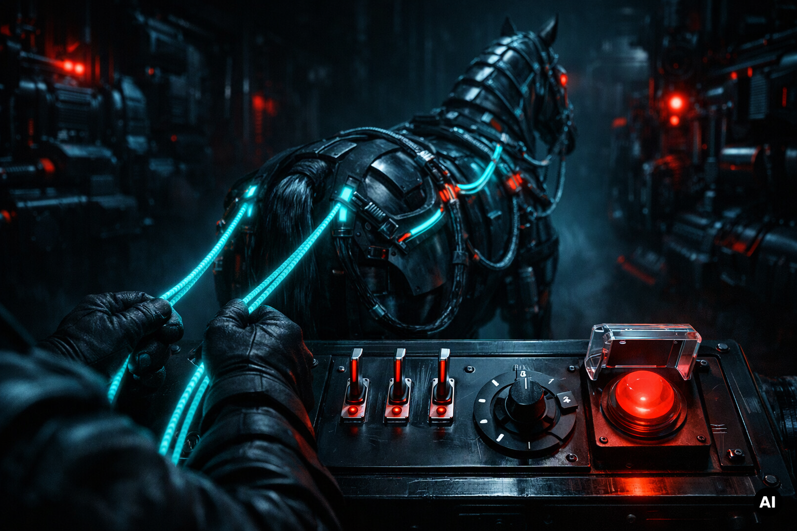

Auftrag, Freigabe, Rückfrage, Not-Aus. Wie viel Kontrolle gibst du ab?

img/lvl3-zuegel.png
LVL 3 · Station 1 · Grundlagen
Die sechs Schnittstellen S0 bis S5
Ein Agent handelt selbstständig. Trotzdem bleibt ein Mensch verantwortlich. Dafür braucht es klar definierte Stellen,
an denen der Mensch eingreift. Im Praxis-Repo stehen sie gesammelt in einer Datei: agenten/harness/mensch.py.
Im Protokoll erkennst du jede Schnittstelle an ihrem Etikett:
[MENSCH ] Auftrag: Trage für Werner aus der 7a eine 2,0 in Mathe ein.
[AGENT ] ❓ notenverwalter fragt dich: Es gibt Paul und Emma Werner. Wen meinst du?
[MENSCH ] Antwort: Emma
[HARNESS] ⚠ FREIGABE NÖTIG: Agent 'notenverwalter' möchte 'add_grade' aufrufen mit {"schueler_id": 11, …}
[MENSCH ] Freigabe erteilt ✔
[FEHLER ] Harness blockiert: 'notenverwalter' darf 'delete_grade' nicht benutzen.
LVL 3 · Station 2 · Interaktiv
Der Autonomie-Regler
Wie viel Kontrolle der Mensch abgibt, ist eine bewusste Entscheidung. Dieselbe Aufgabe läuft je nach Stufe ganz anders ab:
„Trage für Werner aus der 7a eine 2,0 in Mathematik als Schulaufgabe ein.“ (Es gibt zwei Werner in der 7a.)
0 Chatbot1 Assistent2 in the Loop3 on the Loop4 out of the Loop
Rolle des Menschen
Arbeit für den Menschen
Risiko
Aufträge
Führe den Auftrag auf jeder Stufe aus. Notiere: Wie oft greift der Mensch ein? Wer hat am Ende welche Note?
Stufe 3: Schaffst du es, den Agenten mit dem Not-Aus zu stoppen, bevor die Note geschrieben ist?
Stufe 2: Wähle bei der Rückfrage absichtlich den falschen Werner und gib frei. Wer ist jetzt verantwortlich?
Auf welche Stufe würdest du einen Agenten setzen, der Zeugnisnoten berechnet? Und einen, der den Vertretungsplan verschickt? Begründe.
Stufe
Name
Wer handelt?
Rolle des Menschen
Im Praxis-Repo
0
Chatbot
niemand
liest Antworten
LLM ohne Tools
1
Assistent
Mensch
führt Vorschläge selbst aus
LLM schlägt SQL vor, du tippst sie ab
2
Human-in-the-Loop
Agent
gibt jede riskante Aktion frei
notenverwalter
3
Human-on-the-Loop
Agent
beobachtet, kann abbrechen
notenverwalter --alles-erlauben
4
Human-out-of-the-Loop
Agent
nicht beteiligt
bewusst nicht vorgesehen
Je höher die Stufe, desto bequemer, aber desto größer das Risiko. Umso wichtiger werden S0 (gute Grenzen) und S5 (gutes Protokoll).
Im Projekt gilt: Lesen frei, Schreiben nur mit Freigabe, Löschen gibt es gar nicht als Tool.
LVL 3 · Station 3 · Interaktiv
Freigabe-Ermüdung
Der notenverwalter trägt die mündlichen Noten der 7a ein. Für jede Note fragt er dich um Freigabe.
Eine der zehn Freigaben ist falsch. Vergleiche mit der Notenliste und entscheide.
📋 Notenliste der Lehrkraft
Gefahr der Gewöhnung: Wer 50-mal hintereinander „ja“ drückt, liest irgendwann nicht mehr hin.
Zu viele Freigaben sind fast so schlecht wie keine. Und eine Freigabe ist nur so gut wie das, was der Mensch dabei sieht.
Wie eine bessere Freigabe aussieht, hast du in der MCP-LS schon ausprobiert:
Freigabe mit eigener Oberfläche (MCP App).
Sie zeigt Namen statt IDs und lässt dich bei zwei Treffern selbst wählen.
LVL 3 · Station 4 · Vertiefung
Wer baut die Oberfläche? MCP Apps und A2UI
Die meisten Schnittstellen sind Text: Auftrag tippen, „j“ drücken, Protokoll lesen. Agenten können dem Menschen aber auch
Oberflächen zeigen: Tabellen, Formulare, Knöpfe. Dafür gibt es zwei verschiedene Ansätze.
MCP Apps
A2UI (Agent-to-User Interface, Google)
Wer legt die Oberfläche fest?
ein Programmierer, vorher
das LLM, zur Laufzeit
Was wird übertragen?
eine fertige HTML-Seite (ui://-Ressource)
eine Beschreibung als JSON: „eine Karte, darin eine Überschrift und zwei Knöpfe …“
Wer zeichnet sie?
der Browser im abgeschotteten iframe
der Client, mit eigenen, vertrauenswürdigen Bausteinen aus einem festen Katalog
Wird fremder Code ausgeführt?
ja, das JavaScript der App (deshalb Sandbox und CSP)
Vereinfachtes Beispiel im Stil von A2UI. Die genaue Schreibweise ändert sich mit den Versionen des Formats.
Code deuten
Welche Bausteine (Komponenten) kommen vor? Wie hängen sie zusammen (child, children)?
Das LLM vertauscht die beiden action-Werte. Was sieht der Mensch, und was passiert beim Klick auf „Abbrechen“?
Wer muss deshalb prüfen, ob die Aktion hinter einem Knopf zur Beschriftung passt?
Merke: Eine Freigabe ist nur so gut wie die Anzeige, auf der sie beruht. Wer die Oberfläche baut, hat Einfluss darauf, was der Mensch freigibt.
Bei MCP Apps kann man die Freigabe-Seite vorher prüfen. Bei A2UI denkt sich das LLM die Seite jedes Mal neu aus. Der feste Katalog begrenzt, was gebaut werden kann,
aber nicht, welche Aktion hinter einem Knopf liegt. Das muss der Harness prüfen.
LVL 3 · Station 5 · Vertiefung
Wer ist verantwortlich?
Ein Agent kann nicht verantwortlich sein, er ist ein Programm. Verantwortlich sind Menschen, und zwar an verschiedenen Stellen:
S0 · Wer den Agenten definiert
Welche Rechte wurden vergeben? War add_grade wirklich nötig?
Harness · Wer ihn programmiert
Werden die Rechte im Code wirklich erzwungen, oder stehen sie nur im Prompt?
S2 · Wer freigibt
Wurde die Aktion geprüft, oder nur „j“ gedrückt?
S5 · Wer das Ergebnis verwendet
Wurde das Ergebnis kontrolliert, bevor es in den Elternbrief ging?
Diskussion
Ein Agent trägt eine falsche Note ein, nachdem du „j“ gedrückt hast. Wer ist verantwortlich? Begründe mit S0 bis S5.
Beim Lauf mit --modell anthropic gehen Abfrageergebnisse an den Anbieter. Mit echten Schülerdaten wäre das unzulässig. An welcher Schnittstelle wird diese Entscheidung getroffen?
Die EU-KI-Verordnung verlangt für bestimmte KI-Systeme menschliche Aufsicht. Welche Autonomiestufen passen dazu, welche nicht?